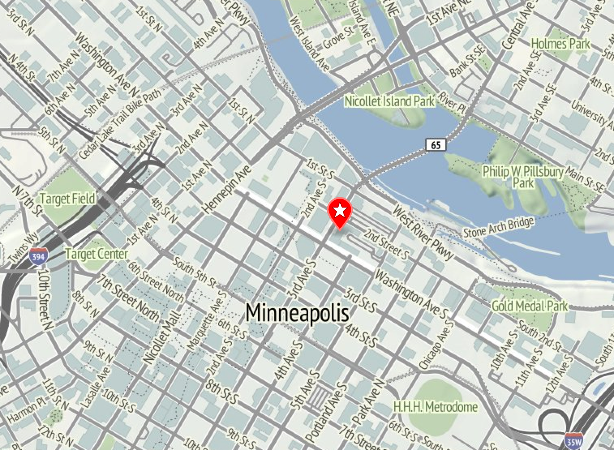
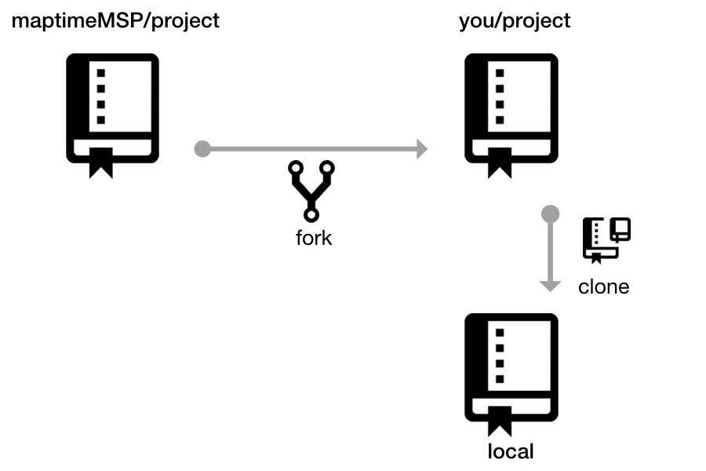
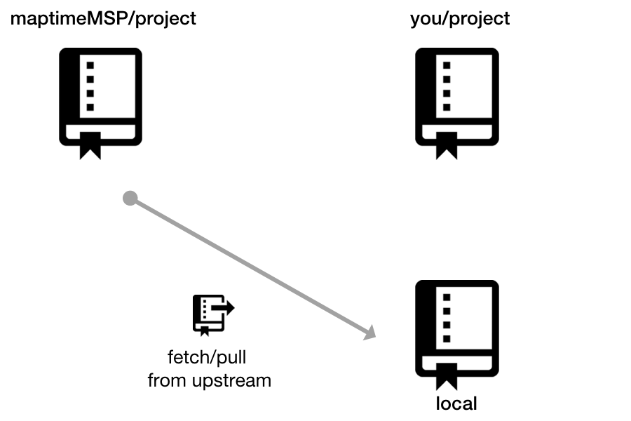
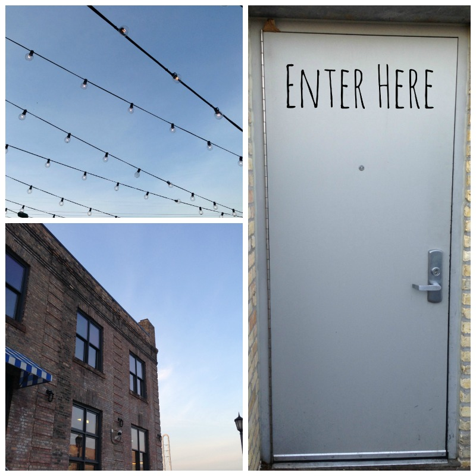
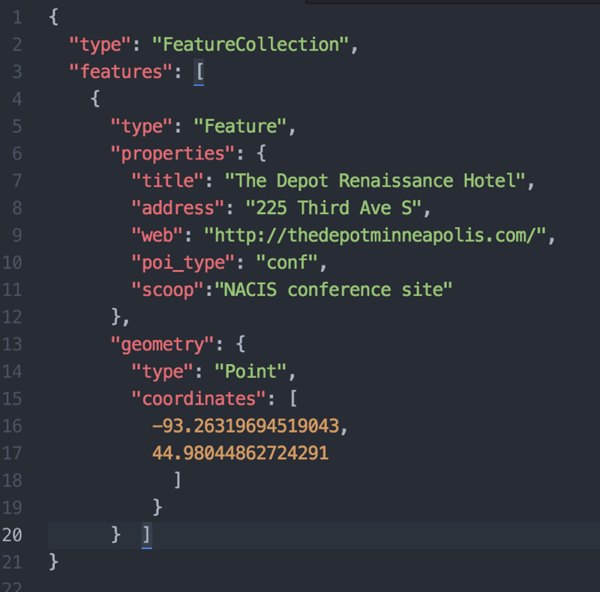
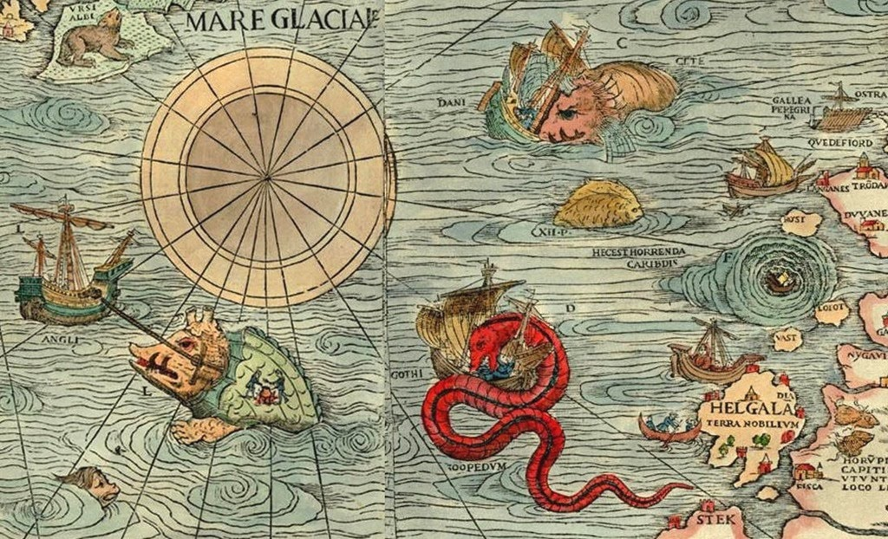

Group project and some Git
David Fawcett
Group project and some Git
@davidfawcett

NACIS Annual Meeting 2015
Welcome Map
Share your favorite places
Everyone can contribute
Learn how to work on a distributed project
Anatomy of OUR project
web page with map
basemap tiles
markers
data
But how do we all work on the same project at the same time?!!
Version Control
... Distributed Version Control
Git and Github
What is Git?
Distributed Version Control
Every repo has full copy of files, history, etc.
Detects changes in files
User adds and commits
Branches
What is GitHub?
A place on the Internet to store your repo
Additional tools to support development
wikis, issue tracker, gui, PR
GH Pages
Ways to use Git
Sole local repo
Local repo => offsite (Github)
GH Project => fork => local ( => and back)
Lots and lots of other ways...
Project Repository
MaptimeMSP/nacis2015-map


Github Pages
Free web site hosting on Github
pages and data
maptime.io
Map app with tiles
Vacation Map


Git is simple ... until it isn't
Workflows can get complicated
Repo and branch names aren't special

Project Resources
The Map
Project Repo
Project Wiki
NACIS Site
Credits
Anatomy of Web Map
Enter Here
Octicons
@davidfawcett
http://fawcett.github.io/presentations/maptime-nacismap/